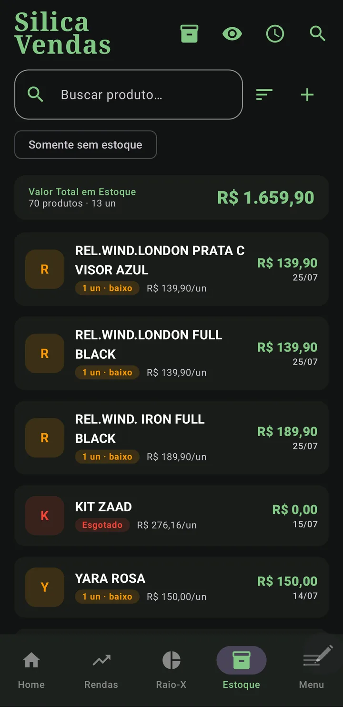
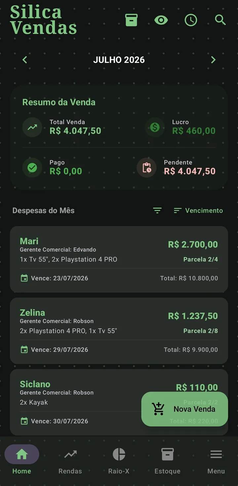
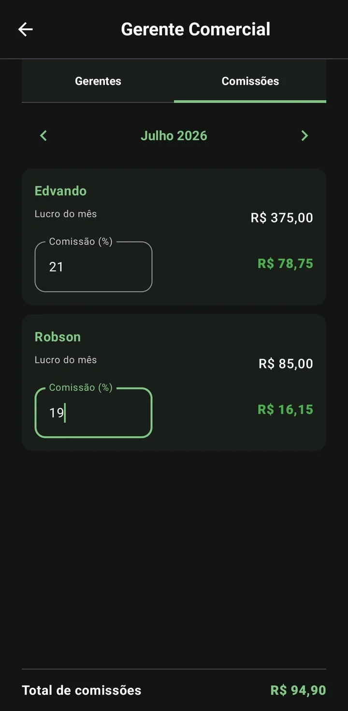

Do estoque ao lucro, no automático
From stock to profit, automatically
O perfil Vendas é uma gestão de revenda completa: controla estoque, registra vendas parceladas, calcula o lucro sozinho e ainda gera relatório de comissões.
The Sales profile is complete resale management: it tracks stock, records installment sales, computes profit on its own and generates a commission report.
Estoque
Stock
Na aba de Estoque você cadastra produtos com custo e quantidade. Use a busca por nome e o filtro "Somente sem estoque" para achar produtos rápido. Ao vender, o estoque diminui sozinho; se você excluir a venda inteira, os itens voltam ao estoque automaticamente.
In the Stock tab you register products with cost and quantity. Use name search and the "Out of stock only" filter to find products fast. When you sell, stock decreases on its own; if you delete the whole sale, items return to stock automatically.
O topo mostra o valor total em estoque e cada produto sinaliza quando está com estoque baixo.
The top shows the total stock value and each product flags when it's running low.

Cadastrar uma venda
Register a sale
- Cliente e vendedorClient and sellerCom autocomplete de clientes e Gerentes já usados.With autocomplete for clients and Managers you've used.
- Itens do estoqueStock itemsO app valida que o estoque não fica negativo.The app checks stock never goes negative.
- Data, vencimento e parcelasDate, due date and installmentsDivididas por centavos (soma exata).Split by cents (exact total).
- ConfirmarConfirmA venda é gravada e o estoque é baixado.The sale is saved and stock is reduced.

Lucro que vira renda sozinho
Profit that becomes income by itself
Aqui você não cadastra rendas manualmente. Sempre que marca uma parcela de venda como paga, o Silica calcula o lucro líquido e registra na sua lista de Rendas, com cliente, produto e valor.
Here you do not add income manually. Whenever you mark a sale installment as paid, Silica computes the net profit and records it in your Income list, with client, product and amount.
- Produto custou R$ 60, vendido por R$ 100 em 2×.
- Product cost $60, sold for $100 in 2×.
- Ao receber cada parcela, o lucro proporcional entra como renda — o lucro só é "real" quando o dinheiro entra.
- As each installment is received, the proportional profit becomes income — profit only counts when the money arrives.
Abatimento & resíduo
Partial payment & residual
Se um cliente paga só parte de uma venda, use Abater Valor: o app quita a parcela atual e redistribui o saldo restante nas parcelas futuras pendentes. Quando um pagamento parcial deixa um resíduo, você pode estendê-lo para uma nova data.
If a client pays only part of a sale, use Partial Payment: the app settles the current installment and redistributes the remaining balance across the future pending installments. When a partial payment leaves a residual, you can extend it to a new date.
Comissões (Gerentes Comerciais)
Commissions (Sales Managers)
Em Menu › Gerente Comercial › aba Comissões, você define o percentual de cada Gerente e usa as setas ‹ › para ver o lucro de cada mês sem sair da tela. A comissão é calculada por parcela paga.
In Menu › Sales Manager › Commissions tab, you set each Manager's percentage and use the ‹ › arrows to see each month's profit without leaving the screen. Commission is computed per paid installment.

Relatório do Gerente (PDF)
Manager report (PDF)
No Raio-X do perfil Vendas, toque no ícone de PDF: escolha o Gerente, o período (um mês ou tudo) e o % de comissão. O relatório é um extrato de parcelas — cada parcela entra no mês do seu vencimento, separando a comissão realizada (parcelas pagas) da comissão a receber.
In the Sales X-Ray, tap the PDF icon: choose the Manager, the period (one month or all) and the commission %. The report is a per-installment statement — each installment lands in its due month, separating realized commission (paid) from commission to receive.
ROI & Conversão em Caixa
ROI & Cash Conversion
O Raio-X do Vendas traz métricas profissionais:
The Sales X-Ray adds professional metrics:
- ROI (Retorno sobre Investimento): quanto seu dinheiro rendeu sobre o custo do estoque.
- ROI (Return on Investment): how much your money earned over the stock cost.
- Conversão em Caixa: quanto do que você vendeu já entrou de fato no seu bolso.
- Cash Conversion: how much of what you sold has actually reached your pocket.